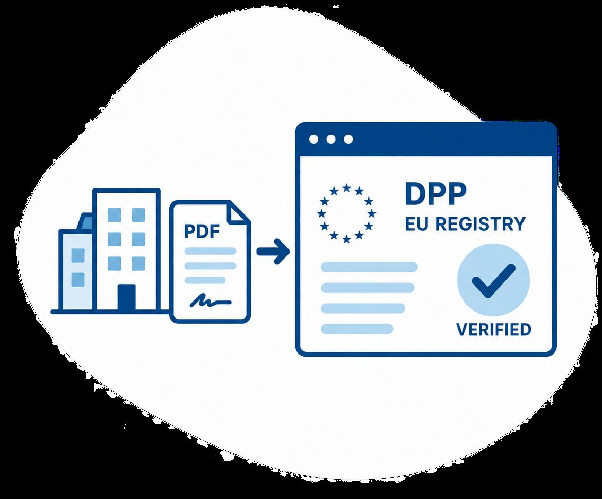

Produkter
Produkter
eSegl Et Virksomhetssertifikat, også kjent som eSegl eller eSeal, er bedriftens digitale ID og stempel .
Ansatt e-ID Ansatt e-ID er din digitale ID på jobb. Bruk den når du gjør arbeidsoppgaver digitalt slik at handlingene blir knyttet til arbeidsgiveren din – ikke på deg som privatperson.
Privat e-ID Med en Privat e-ID kan du logge deg inn til over 1 600 offentlige tjenester på nett. Commfides Privat e-ID kan brukes på høyeste sikkerhetsnivå i Norge.
SSL/TLS-sertifikater SSL-portalen lar deg administrere SSL-sertifikater for din bedrift og deres bedriftskunder

Kort fortalt: hva trenger du?
Beskriv saken, så svarer vi med hva det krever og hva det koster.